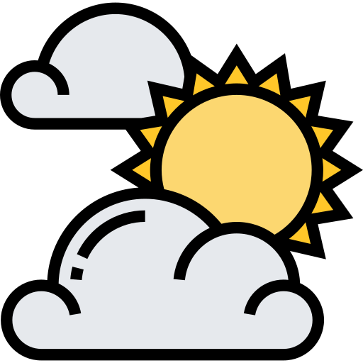
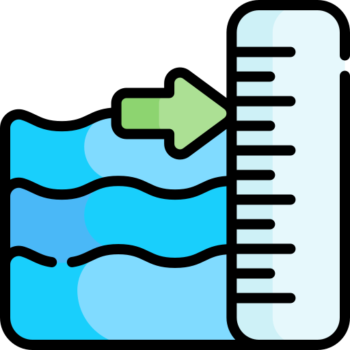
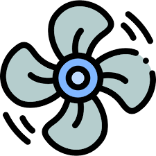

Valencia
IDEAM
2.72
m
Sin información
suficiente

Parcialmente Soleado
Alerta Meteorológica Actual
El nivel del embalse es normal-bajo y la cantidad de agua que entra es menor que la que sale. Esto hace que el embalse tienda a vaciarse. La cantidad de agua que se libera es alta, lo que impacta de forma significativa el río Sinú a lo largo de la cuenca.
Monitoreo en tiempo real
IDEAM
Sin información
suficiente
IDEAM
IDEAM


El nivel del embalse es normal-bajo y la cantidad de agua que entra es menor que la que sale. Esto hace que el embalse tienda a vaciarse. La cantidad de agua que se libera es alta, lo que impacta de forma significativa el río Sinú a lo largo de la cuenca.